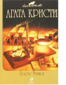

В эту книгу вошли два сборника, вышедшие уже после смерти Леди Агаты. Сборник "Последние дела мисс Марпл" увидел свет в 1979 году. В него входят шесть рассказов, повествующих о последних делах мисс Марпл. Великой сыщице предстоит разыскать пропавшие драгоценности, помочь расшифровать завещание, расследовать убийство портновской меркой, раскрыть преступление по книге, вывести на чистую воду мошенниц, а также помочь адвокату защитить клиента. Кроме того, в сборник вошли еще два детективных рассказа, не входящих ни в один цикл. В нескольких рассказах сборника "Доколе длится свет" появляется великий коллега мисс Марпл - Эркюль Пуаро. Этот сборник уникален тем, что в него вошли редкие и малоизвестные новеллы Агаты Кристи, а также оригинальные версии хорошо знакомых читателям рассказов.